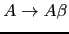
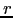

Sig: Dangling else: Asociando un Sup: Análisis Descendente mediante Parsing Ant: Eliminando la Recursividad por Con:
pegjs (aunque
obviamente es mucho mejor
usar la ilustrada anteriormente).
Consideremos una variable  con dos producciones:
con dos producciones:
donde
 no comienzan por
no comienzan por  .
Estas dos producciones pueden ser sustituidas por:
.
Estas dos producciones pueden ser sustituidas por:
|
|
|
|
eliminando así la recursión por la izquierda.
Las producciones recursivas por la derecha dan lugar a árboles que se hunden hacia la derecha. Es mas difícil traducir desde esta clase de árboles operadores como el menos, que son asociativos a izquierdas.
|
|
|
|
|
|
{ alpha_action } |
|  | { beta_action } |
|
|
{ gamma_action } |
para una sentencia como
 la secuencia de
acciones será:
la secuencia de
acciones será:
gamma_action beta_action alpha_action
¿Cómo construir un esquema de traducción para la gramática resultante de eliminar la recursión por la izquierda que ejecute las acciones asociadas en el mismo orden?. Supongamos para simplificar, que las acciones no dependen de atributos ni computan atributos, sino que actúan sobre variables globales. En tal caso, la siguiente ubicación de las acciones da lugar a que se ejecuten en el mismo orden:
{ gamma_action } |
{ beta_action } |
{ alpha_action } |
Si hay atributos en juego, la estrategia para construir un esquema de traducción equivalente para la gramática resultante de eliminar la recursividad por la izquierda se complica. Consideremos de nuevo el esquema de traducción de infijo a postfijo de expresiones aritméticas de restas:
|
|
{ $expr{T} = $expr[1]{T}." ".$NUM{VAL}." - "} |
|
|
{ $expr{T} = $NUM{VAL} } |
En este caso introducimos un atributo H para los nodos de la clase
 el cuál
acumula la traducción a postfijo hasta el momento. Observe como
este atributo se computa en un nodo a partir del
correspondiente atributo del el padre y/o de los hermanos del nodo:

{ $r{H} = $NUM{VAL} } { $expr{T} = $r{T} }

{ $r_1{H} = $r{H}." ".$NUM{VAL}." - " } 
{ $r{T} = $r_1{T} }

{ $r{T} = $r{H} }
El atributo H es un ejemplo de atributo heredado.
PegJS no permite acciones intermedias. Tampoco se puede acceder al atributo de la parte izquierda. Por eso, a la hora de implantar la solución anterior debemos introducir variables sintácticas temporales que produzcan la palabra vacía y que vayan acompañadas de la acción semántica correspondiente.
Además nos obliga a usar variables visibles por todas las reglas semánticas para emular el acceso a los atributos de la parte izquierda de una regla de proudcción.
El siguiente ejemplo ilustra como eliminar la reucrusión por la izquierda respetando la asociatividad de la oepración de diferencia:
[~/pegjs/examples(master)]$ cat inherited.pegjs
{
var h = 0, number = 0;
}
e = NUMBER aux1 r { return h; }
aux1 = /* empty */ { h = number; }
r = '-' NUMBER aux2 r { return h; }
/ /* empty */
aux2 = /* empty */ { h -= number; }
NUMBER = _ digits:$[0-9]+ _ { number = parseInt(digits, 10); return number; }
_ = $[ \t\n\r]*
[~/pegjs/examples(master)]$ cat use_inherited.js
var PEG = require("./inherited.js");
var r = PEG.parse("2-1-1");
console.log(r);
var r = PEG.parse("4-2-1");
console.log(r);
var r = PEG.parse("2-3-1");
console.log(r);
[~/pegjs/examples(master)]$ pegjs inherited.pegjs
Referenced rule "$" does not exist.
[~/pegjs/examples(master)]$ ../bin/pegjs inherited.pegjs
[~/pegjs/examples(master)]$ node use_inherited.js
0
1
-2